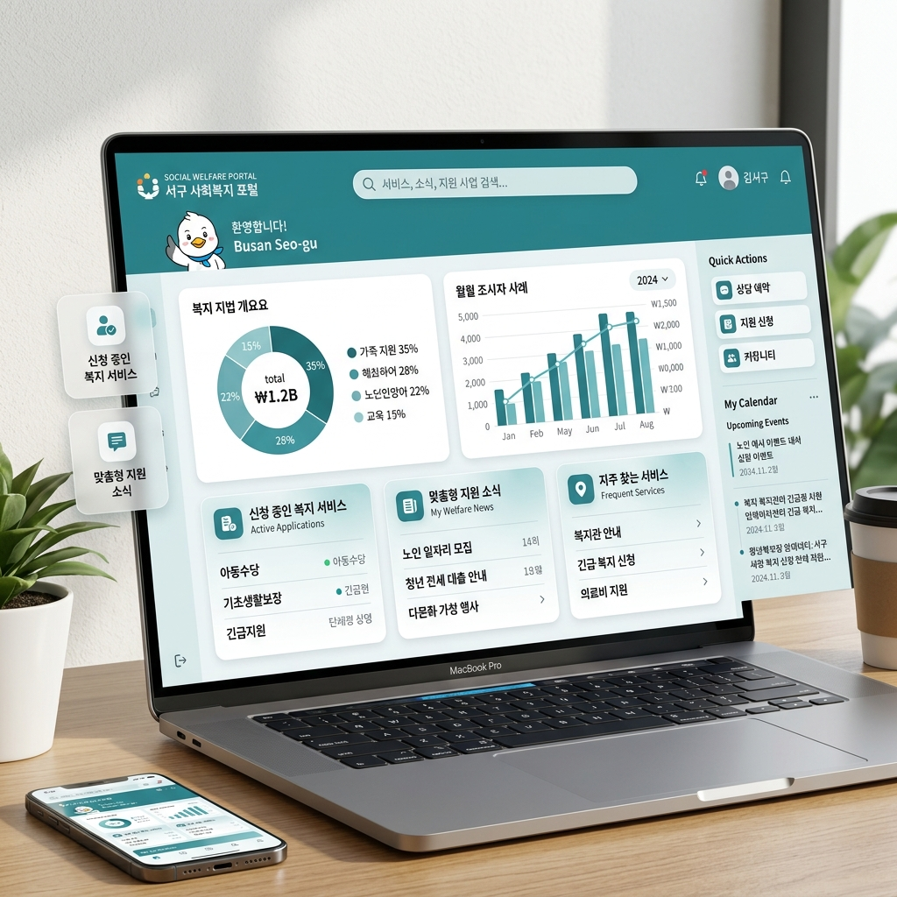

통합돌봄 민간복지 서비스
포털 구성(안) 안내
부산광역시 서구 내 사회복지관, 노인복지관, 장애인복지관의 모든 민간 복지 서비스를 한눈에 확인하고 관리할 수 있는 통합 플랫폼입니다.

왜 통합 포털이 필요한가요?
기존의 복지 서비스 정보는 각 기관별로 분산되어 있어, 사례관리자나 사회복지사가 적절한 자원을 찾는 데 많은 시간이 소요되었습니다. 본 포털은 이러한 불편함을 해소하기 위해 탄생했습니다.
- 정보의 집약: 서구 내 모든 민간 복지 자원을 한 곳에서 검색
- 실시간 업데이트: 각 기관 관리자가 직접 최신 정보를 반영
- 사례관리 효율화: 대상자에게 필요한 최적의 서비스를 신속하게 매칭
주요 기능 및 특징
통합 스마트 검색
서비스명, 기관명, 생애주기, 서비스 대분류 등 다양한 필터를 통해 원하는 정보를 초고속으로 찾아냅니다.
데이터 시각화
현재 제공되고 있는 복지 서비스의 분포를 생애주기별, 카테고리별 차트로 한눈에 파악할 수 있습니다.
간편한 데이터 관리
복잡한 코딩 없이 엑셀(CSV) 업로드만으로 대량의 데이터를 즉시 업데이트하고 동기화할 수 있습니다.
안전한 관리 시스템
Supabase Cloud DB와 Bcrypt 보안을 적용하여 각 기관의 데이터와 관리자 권한을 보호합니다.
시스템 구성 및 기술 스택
Supabase (DB)
강력한 클라우드 데이터베이스를 통해 수많은 복지 데이터를 실시간으로 안전하게 저장하고 관리합니다.
GitHub (Repo)
버전 관리를 통해 시스템의 안정성을 유지하며, 팀 단위의 협업과 코드 관리를 효율적으로 수행합니다.
Vercel (Hosting)
최신 서버리스 배포 플랫폼을 활용하여 중단 없는 서비스와 빠른 접속 속도를 보장합니다.
Tailwind & Vue
최신 웹 프레임워크를 사용하여 사용자에게 부드럽고 직관적인 인터페이스를 제공합니다.
사용 및 관리 안내
서비스 조회
일반 사용자나 사례관리자는 로그인 없이 모든 복지 서비스를 자유롭게 조회하고 검색할 수 있습니다.
기관 관리자 로그인
각 기관 담당자는 부여된 계정으로 로그인하여 본인 기관의 서비스를 직접 수정하거나 추가할 수 있습니다.
데이터 동기화
관리자 도구의 CSV 업로드 기능을 활용하면 로컬 엑셀 데이터를 실시간으로 클라우드에 반영할 수 있습니다.